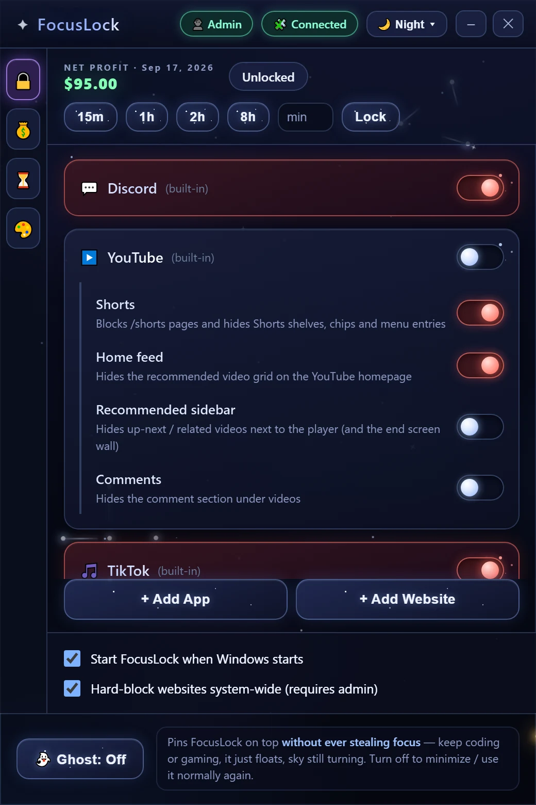
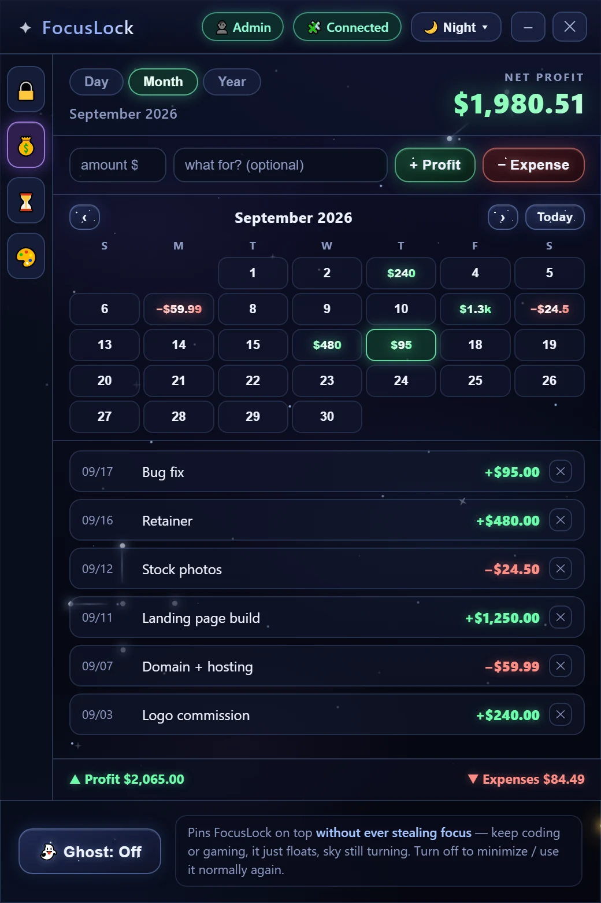
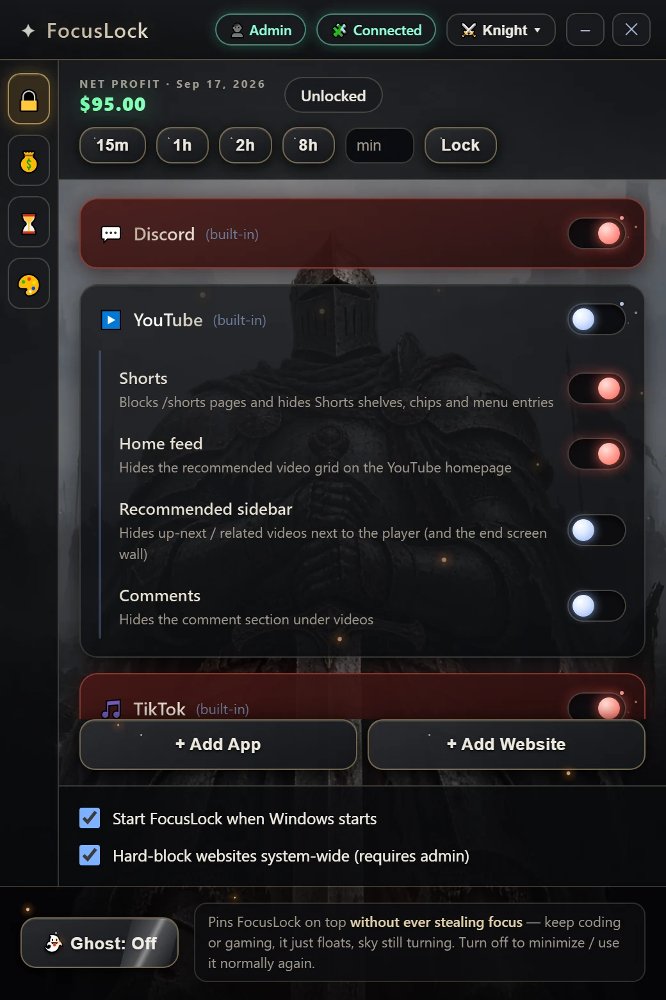

Apps that stay closed
A disabled app is closed immediately, and every relaunch is closed again within about a second and a half. Discord Stable, PTB and Canary are covered out of the box; add anything else with the running-app picker.
Windows 10 & 11 · 64-bit
Turn off Discord and it closes — and closes again every time it tries to come back. Turn off YouTube and it lands on a blocked page instead of the feed. Set the lock timer and your own choices are out of reach until it runs out.
v2.0.0 · installer, no admin rights needed · installs like any normal program
Heads up: FocusLock is a Windows app, and you don't look like you're on Windows.

A disabled app is closed immediately, and every relaunch is closed again within about a second and a half. Discord Stable, PTB and Canary are covered out of the box; add anything else with the running-app picker.
A small browser extension (it ships with the app) sends blocked sites to a blocked page — typed in, clicked from a search result, or embedded in another page. Turn on the system-wide hard block and they stop resolving in every app at once.
Keep the videos you came for and switch off the parts that keep you there: Shorts, the home feed, the recommended sidebar, and comments — each on its own toggle.
Lock your choices for 15 minutes to 8 hours, or any length you type. While it runs you can tighten blocks but not loosen them, and FocusLock refuses to quit. Changed your mind for a real reason? One Unlock button ends it.
Pins the window on top of your game or editor while never taking focus, so it can't swallow a keystroke. Constellations keep drawing themselves on the desktop underneath.
Log profit and expenses, see the net for the day, month or year, and read a calendar where every day shows what it earned or cost you. Plus a list of what you're still owed.


It installs for your user account only, so Windows won't ask for administrator rights. Windows may warn that the app is unrecognized — see the FAQ below for why, and what to click.
Download FocusLockFlip a toggle and the block is live. Closing the window drops FocusLock into the system tray, where it keeps working; turn on "Start FocusLock when Windows starts" so blocks survive a reboot.
Click the 🧩 chip in the app's title bar: it opens the extension folder and shows the three steps (extensions page → Developer mode → Load unpacked). Website and YouTube blocking runs through it, and it keeps enforcing even when the app is closed.
FocusLock is friction, not a prison. With the timer off you can quit it from the tray; you could remove the extension, end the process in Task Manager, or edit its config file by hand. Nothing here pretends to be tamper-proof.
The point is that "just one quick scroll" stops being one click and starts being a deliberate decision — which, most days, is enough.
No — it means the installer isn't signed with a paid code-signing certificate, so SmartScreen doesn't recognize it yet. Click More info, then Run anyway. If you'd rather not, don't install it: that warning is exactly the right instinct for software you didn't expect.
Not for anything except the system-wide hard block, which writes blocked domains into the Windows hosts file. The app offers to restart itself with rights when you turn that on, and works fully without it.
No. There's no account, no analytics and no update check. The only network listener is on 127.0.0.1 — your own machine — so the browser extension can read which sites you've blocked. Ordinary web pages are refused access to it.
In %APPDATA%\FocusLock\config.json: your blocks, settings and money
log, in plain JSON you can read or back up. Uninstalling leaves it alone, so
reinstalling picks up where you left off.
Because it doesn't carry a browser around. The interface is drawn by the web engine Windows already ships (WebView2) and the rest is a native binary, so the download is a few megabytes instead of a hundred.
Not today. The app blocking and hosts-file blocking are written against Windows, so that's the only version that exists.
Settings → Apps → Installed apps → FocusLock → Uninstall, like anything else. Turn off the hard block first if you had it on, so no blocked domains are left behind in your hosts file.
v2.0.0 · Windows 10 & 11, 64-bit